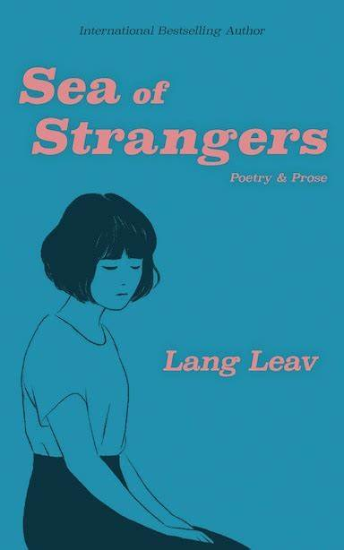
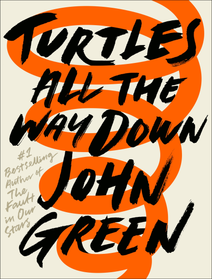
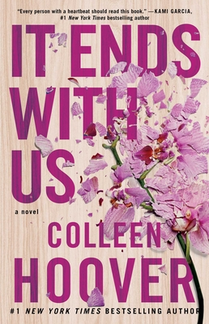
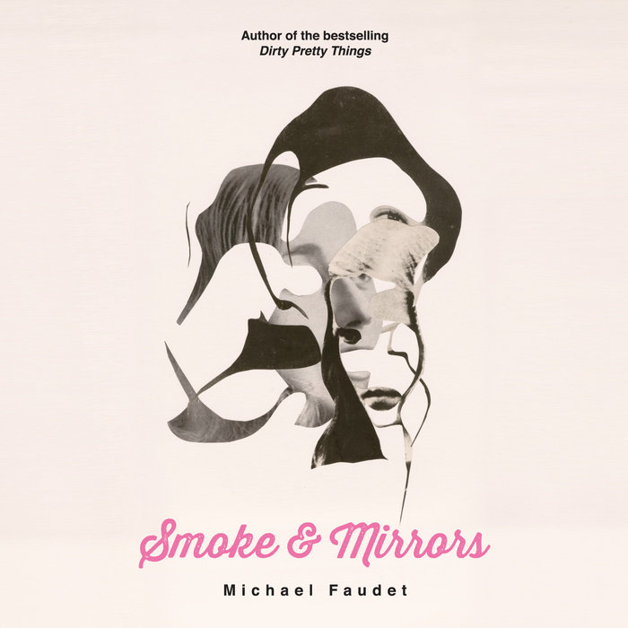
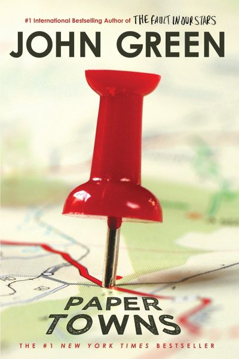
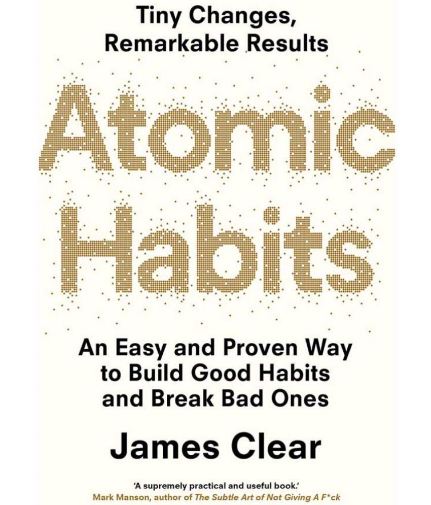
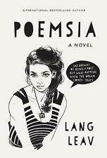
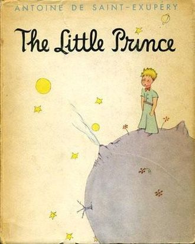
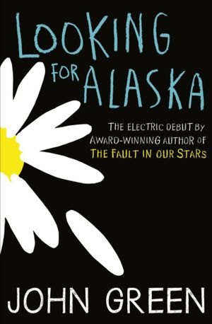

My Top 10 Favorite Books
Sea of Strangers
In Lang Leav's new poetry collection, Sea of Strangers is about love, breakups and healing. These topics are common from her previous collections and delivers each prose with emotions. Gladly she explores inspirational and empowering poems.
Turtles All the Way Down
It all begins with a fugitive billionaire and the promise of a cash reward. Turtles All the Way Down is about lifelong friendship, the intimacy of an unexpected reunion, Star Wars fan fiction, and tuatara. But at its heart is Aza Holmes, a young woman navigating daily existence within the ever-tightening spiral of her own thoughts. This is a young adult novel that tells us the story of Aza. She is a 16-year-old girl with obsessive-compulsive disorder. John Green himself suffered from this disorder when he was young.
It Ends With Us
It Ends With Us is a 2016 romance novel by Colleen Hoover. The novel tells the story of Lily Bloom and her doomed romance with Ryle Kincaid and traces her past history growing up in an abusive home, her fall into an abusive relationship, and her escape from that relationship.
Smoke and Mirrors
Michael Faudet's latest book takes the listener on an emotionally charged journey, exploring the joys of falling madly in love and the melancholy world of the brokenhearted. Beautifully captured in poetry, prose, and short stories, Faudet's whimsical and sometimes erotic writing has captured the hearts and minds of thousands of readers from around the world..
Paper Towns
John Green’s Paper Towns, published by Dutton Juvenile in 2008, is a novel that plays off earlier themes in his works Looking for Alaska and An Abundance of Katherines. Quentin Jacobsen is a seventeen-year-old living in an Orlando-area high school. He has been in love with his childhood best friend, Margo, his entire life.
The Love Hypothesis
As a third-year Ph.D. candidate, Olive Smith doesn't believe in lasting romantic relationships--but her best friend does, and that's what got her into this situation. Convincing Anh that Olive is dating and well on her way to a happily ever after was always going to take more than hand-wavy Jedi mind tricks: Scientists require proof. So, like any self-respecting biologist, Olive panics and kisses the first man she sees. That man is none other than Adam Carlsen, a young hotshot professor--and well-known ass. Which is why Olive is positively floored when Stanford's reigning lab tyrant agrees to keep her charade a secret and be her fake boyfriend. But when a big science conference goes haywire, putting Olive's career on the Bunsen burner, Adam surprises her again with his unyielding support and even more unyielding... six-pack abs. Suddenly their little experiment feels dangerously close to combustion. And Olive discovers that the only thing more complicated than a hypothesis on love is putting her own heart under the microscope.
Atomic Habits
Atomic Habits is the most comprehensive and practical guide on how to create good habits, break bad ones, and get 1 percent better every day. I do not believe you will find a more actionable book on the subject of habits and improvement. If you’re having trouble changing your habits, the problem isn’t you. The problem is your system. Atomic Habits will reshape the way you think about progress and success and give you the tools and strategies you need to transform your habits—whether you are a team looking to win a championship, an organization hoping to redefine an industry, or simply an individual who wishes to quit smoking, lose weight, reduce stress, and achieve success that lasts.
Poemsia
Award-winning Author Lang Leav presents Poemsia, an inspiring YA novel that will make you laugh, cry, and want to share with all your friends! VERITY WOLF dreams of being a poet—not that she’d ever admit it to anyone. Her best friend, Jess, thinks she’s definitely got what it takes, while her cat, Zorro, is characteristically indifferent. As for the cute boy she’s just met, he’s about to discover her best kept secret. When Verity stumbles on an old, mysterious book, Poemsia, she finds herself suddenly thrust into the dizzying world of social media stardom, where poets are the new rock stars and fame is sometimes just a click away. International bestselling author Lang Leav takes you into the shadowy world of contemporary poetry in this revealing and emotionally charged story about friendship, first love, betrayal, and the courage to follow your dreams.
The Little Prince
The Little Prince, French Le Petit Prince, fable and modern classic by French aviator and writer Antoine de Saint-Exupéry that was published with his own illustrations in French as Le Petit Prince in 1943. The simple tale tells the story of a child, the little prince, who travels the universe gaining wisdom.
Looking for Alaska
Looking for Alaska is a novel that exposes readers to the interpersonal relationships between the youth and adult characters in the novel. Green presents specific adult characters, like The Eagle who is the dean of students, whose main focus is to eliminate the rebellious tendencies of various students.